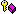

| BeMDI SDK |
| CZOrderedViewManager | Constructor | |
| WindowActivated | BeOS hook function | |
| Z_AddChild |  | Adds a new child view. |
| Z_BringToFront | Brings a view to front | |
| Z_InvalidateChildren | Invalidates a view and all its children. | |
| Z_InvalidateChildren | Invalidates a region of a view and its children. | |
| Z_MoveViewTo | Moves a view | |
| Z_RecalcClipping | Reclip 'changedView' and all views below. | |
| Z_ReclipFromAbove | Calculates the clipping region for a view. | |
| Z_RemoveView | Removes a view | |
| Z_ResizeViewTo | Modifies the size of a view | |
| Z_SendToBack | Sends a view to back. | |
| Z_UpdateCachedRects | Updates the cached screen rectangles for all ZOrderedViews. | |
| Z_UpdateClipping | Recalc the clipping of a view and for the obscured/revealed areas. | |
| Z_ViewPositionChanged | Update clipping after a view was resized or moved. | |
| backMostView | Back most view. | |
| cachedOrigin | Position on screen at last update of the cached screen rects. | |
| firstActivate | True if this view never was activated. | |
| topMostView | Top most view. |
Normal BeOS views don't maintain a z-order. All siblings have the same position in the z-order. This means that siblings can overdraw each other. Normally views don't overlap, so this isn't an issue.
But MDI views must not overdraw each other. Therefore they are derived from CZOrderedView. ZOrderedViews can only live inside a CZOrderedViewManager.
A ZOrderedViewManager takes all its child views and does the necessary clipping. This class mirrors all view operations, which could affect clipping (moving a view, resizing it etc.). Normally shouldn't you don't call the view's operation directly. Call the ViewManager's method instead. This asures that the clipping remains intact.
Normally you shouldn't use CZOrderedView directly. Instead use CMDIClientView, which is derived from this class.
| Last modified | Sun Sep 2 20:42:22 2001 |
| Derived from | BView | Declared in | ZOrderedView.h |